------ Services ------
Good GIS begins with people. Freewheel Maps offers a full suite of geospatial services, with a people first, technology next approach to help you get the most from GIS technology.
- Geospatial Strategy and Planning
- Spatial Analysis and Modeling
- High Accuracy GNSS Mapping
- Workflows from Field to Insight
- Web-GIS and Public Applications
- High Quality Cartography
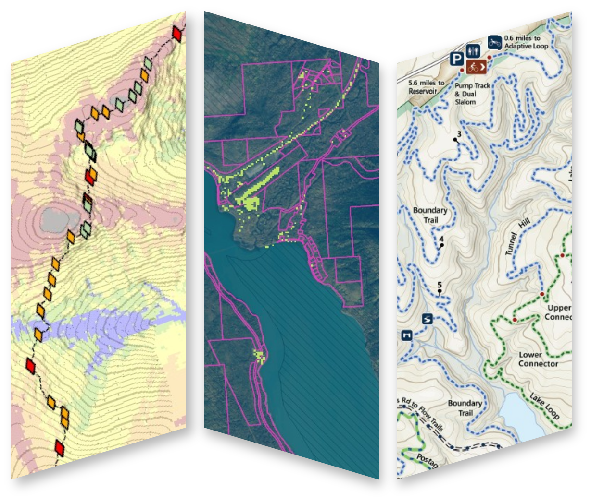
--- High Accuracy GNSS ---
Freewheel Maps is an authorized reseller of Eos Positioning Systems GNSS recievers. If you are collecting data where accuracy matters, Eos has the most reliable and user-friendly units on the market. Contact us for in-person or virtual sales demos, to inquire about rentals, or to hire Freewheel Maps for a GNSS data collection project.
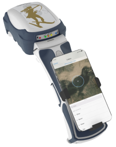
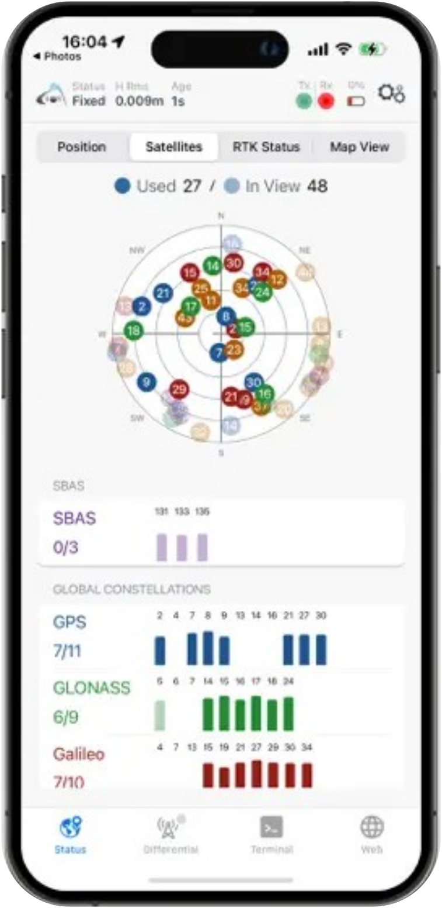
- Submeter (SBAS) and centimeter (RTK) Accuracy
- Tilt Compensation and Laser-based SmartHandle
- Bluetooth to Any Device
- Works with Any Data Collection App
- Integrate with Other Instruments
------ Maps ------
Freewheel Maps is more than just a GIS shop. We produce high quality maps for print, web graphics, and interactive applications. You can find these maps on trailhead kiosks, on bookstore shelves, framed on living room walls, and online.
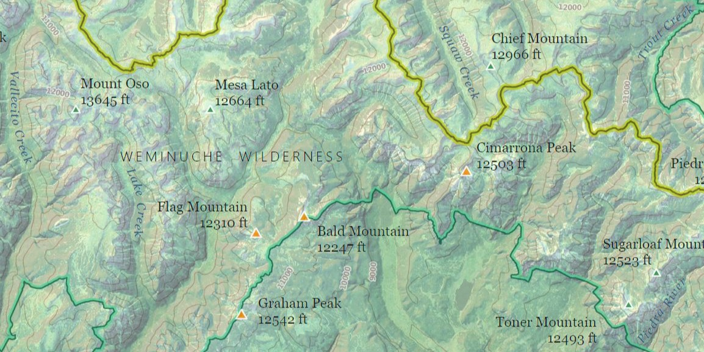
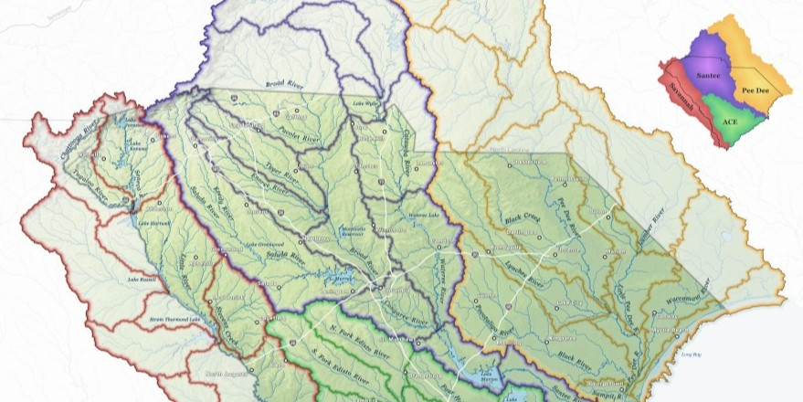
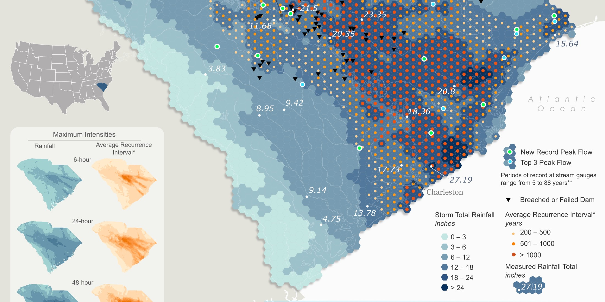
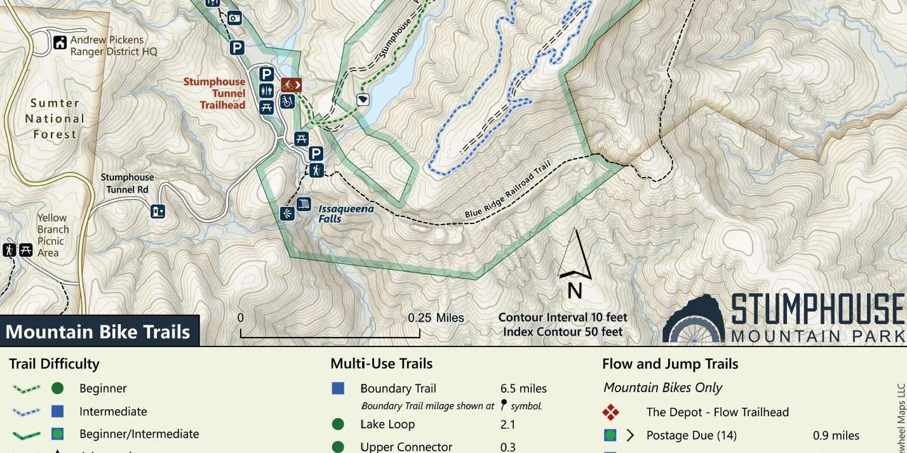
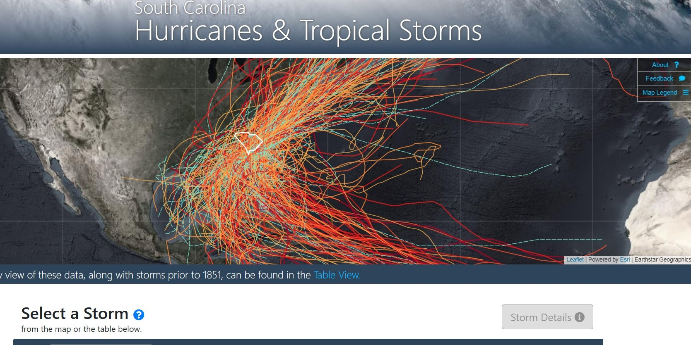
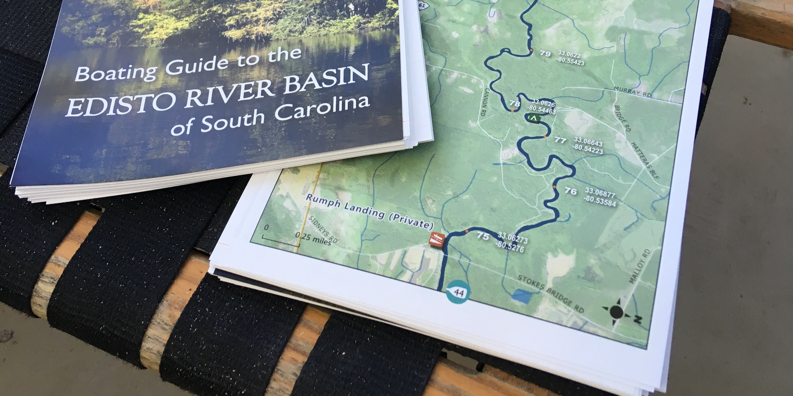
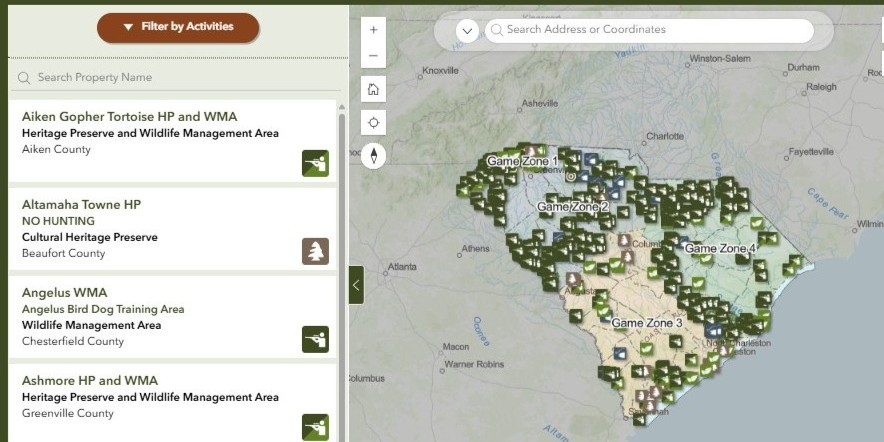
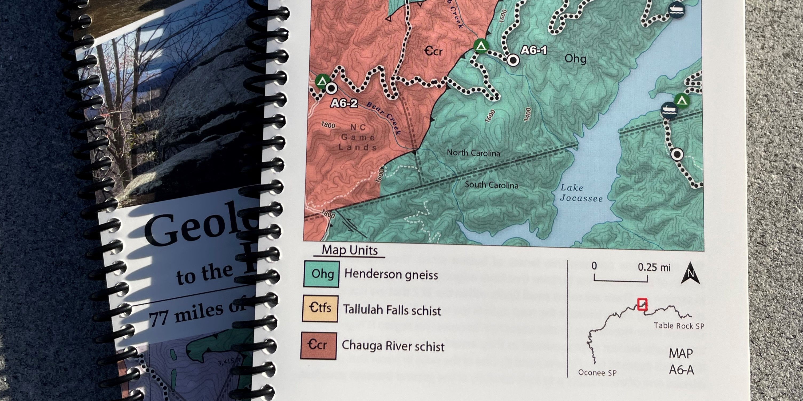
------ About ------
Freewheel Maps began in 2025 in Columbia, South Carolina. Tanner Arrington spent the previous decade as a GIS Manager for the South Carolina Department of Natural Resources. Current clients include conservation organizations, water utilities, water resources engineers, environmental firms, and more.
Freewheel Maps collaborates with the great folks at Community Geographics.
If we can help your organization or company with GIS, please send me an email to get in touch:
.
{kind=link}